السلسلة 11
السيارة (صنف B) · 40 سؤال. كل سؤال فيه الصورة والصوت. اختار الجواب (ولا جوج إلا كانو صحاح)، ورك على «تأكيد» باش تشوف واش صبتي.
- 40سؤال
- 32باش تنجح
- 1 – 4جواب واحد ولا أكثر
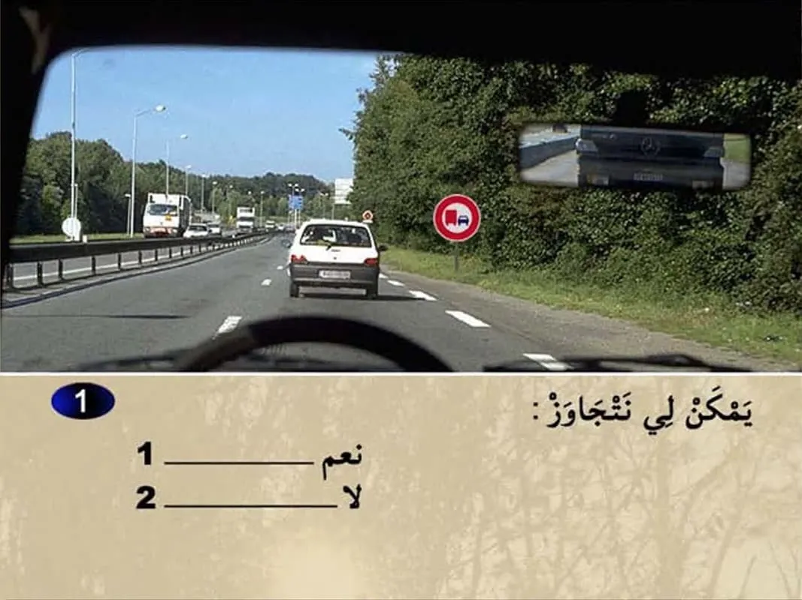
الكلافيي: 1–4 للجواب، Enter للتأكيد وللسؤال الجاي.
السلسلة 11 · النتيجة ديالك
0 / 40
السلسلة 11
السيارة (صنف B) · 40 سؤال، بالصوت، مع الجواب الصحيح والشرح.
السؤال 1
بيّن الجواب
الجواب الصحيح: 1
الطريق ذات إتجاه واحد ويمكنني التجاوز، لا توجد علامة طرقية تمنعنا من التجاوز، بالنسبة للعلامة الطرقية فهي خاصة بالشاحنات وتشير إلى أنه يمنع على الشاحنات التجاوز وليس على السيارات العادية.
السؤال 2
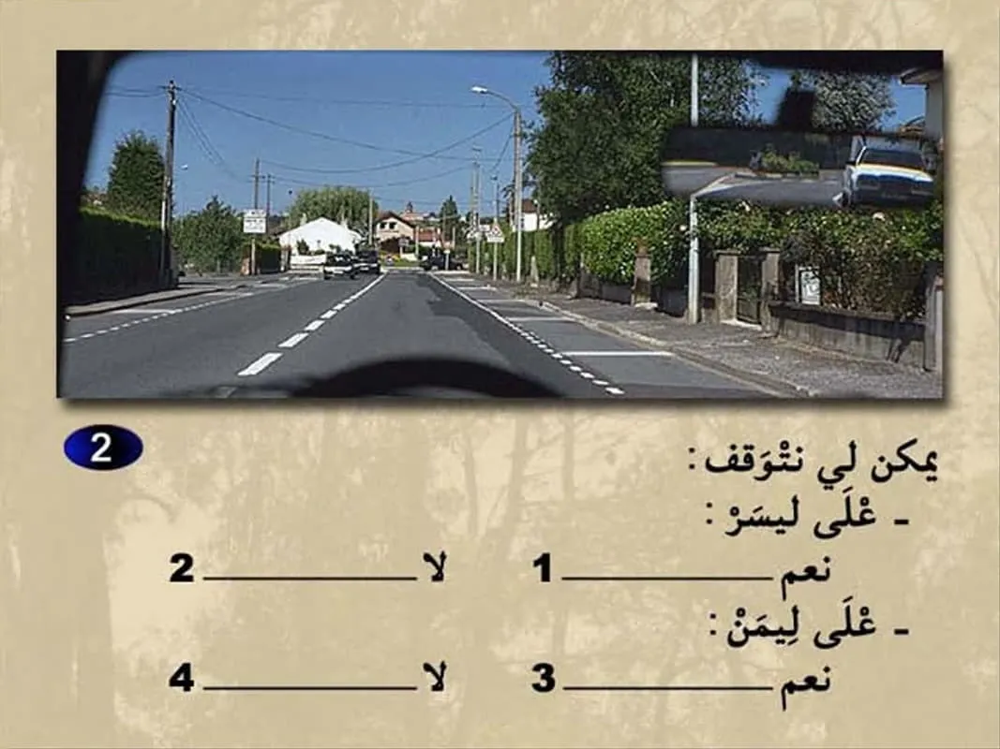
بيّن الجواب
الجواب الصحيح: 2 و 3
الطريق ذات إتجاهين ولا يمكننا التوقف في الجهة المعاكسة، لذلك في هذه الحالة لدينا الحق في التوقف فقط في الجهة اليمنى.
السؤال 3
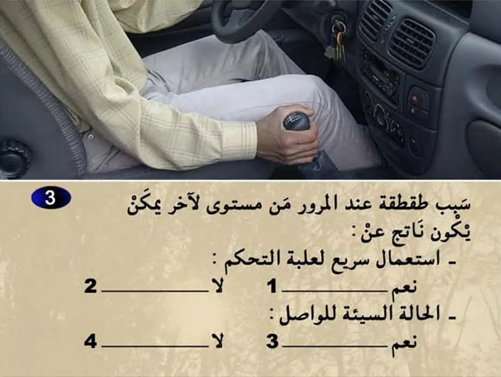
بيّن الجواب
الجواب الصحيح: 1 و 3
بالنسبة لصوت الطرطقة عند المرور من مستوى إلى اخر بالنسبة لمحول السرعة فهو بسبب الإستعمال السريع لعلبة التحكم وأيظا قد تكون الحالة السيئة للواصل.
السؤال 4
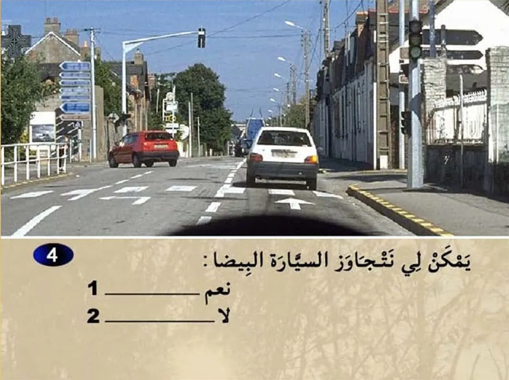
بيّن الجواب
الجواب الصحيح: 2
السيارة البيضاء سوف تغيّر الإتجاه الى اليمين، إذا قمت بتجاوزها فيوجد تشوير أفقي وهو السهم يجبرنا للإنعطاف إلى اليسار، إذا لا يمكنني تجاوز السيارة البيضاء بإستعمال المسلك الثاني. يجب في هذه الحالة الإنتباه والتقليل من السرعة والمرور بعد تغيير السيارة البيضاء لإتجاهها.
السؤال 5
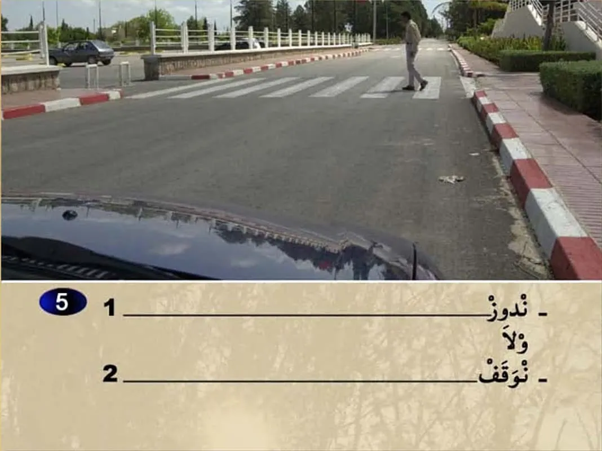
بيّن الجواب
الجواب الصحيح: 2
عندما يندمج الراجلين في المسلك فيجب علينا إعطائهم حق الأسبقية والإنتظار للمرور.
السؤال 6
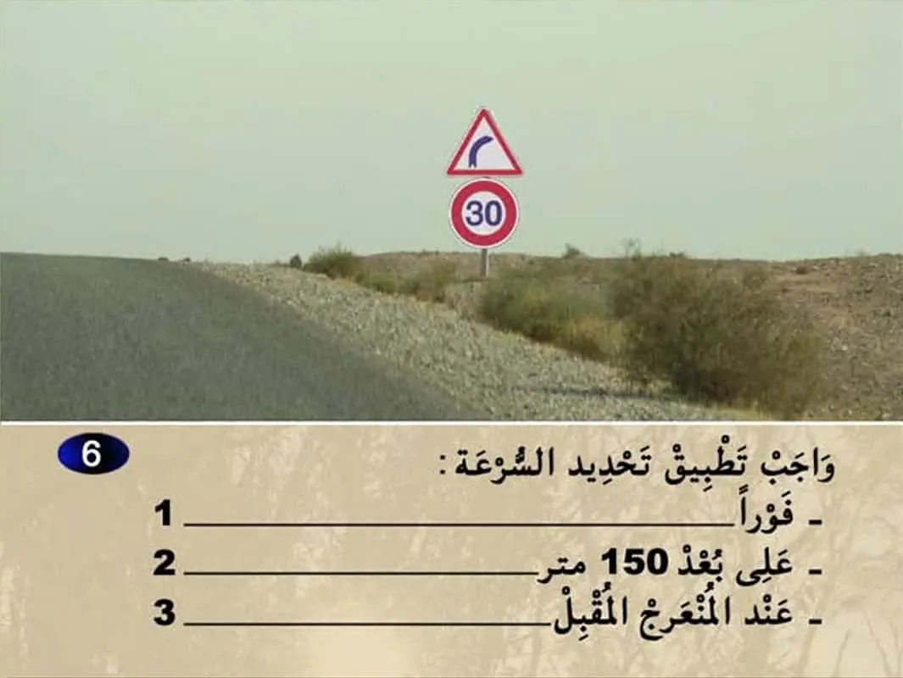
بيّن الجواب
الجواب الصحيح: 1
بالنسبة لتحديد السرعة للعلامة الطرقية الخاصة ب 30 كلم في الساعة، فيتم تطبيقها من عند العلامة دائما.
السؤال 7
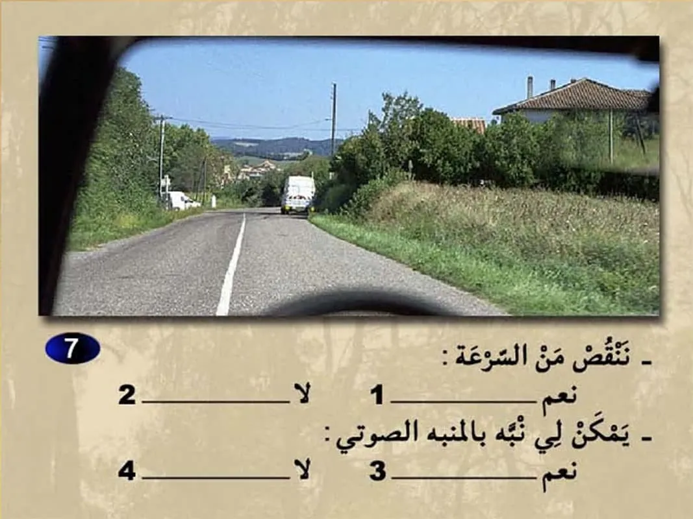
بيّن الجواب
الجواب الصحيح: 1 و 3
يوجد خطر كما توضح الصورة، بالنسبة للسيارة أو الشاحنة فهي غير متوقفة بشكل جيد في الطريق وهذا يشكل خطر، وأيظا خطر اخر في الجهة اليسرى بالنسبة للسيارة التي تريد الإندماج في الطريق. لذلك في هذه الحالة يجب الإنتباه والتخفيف من السرعة والتنبيه بالمنبّه الصوتي.
السؤال 8
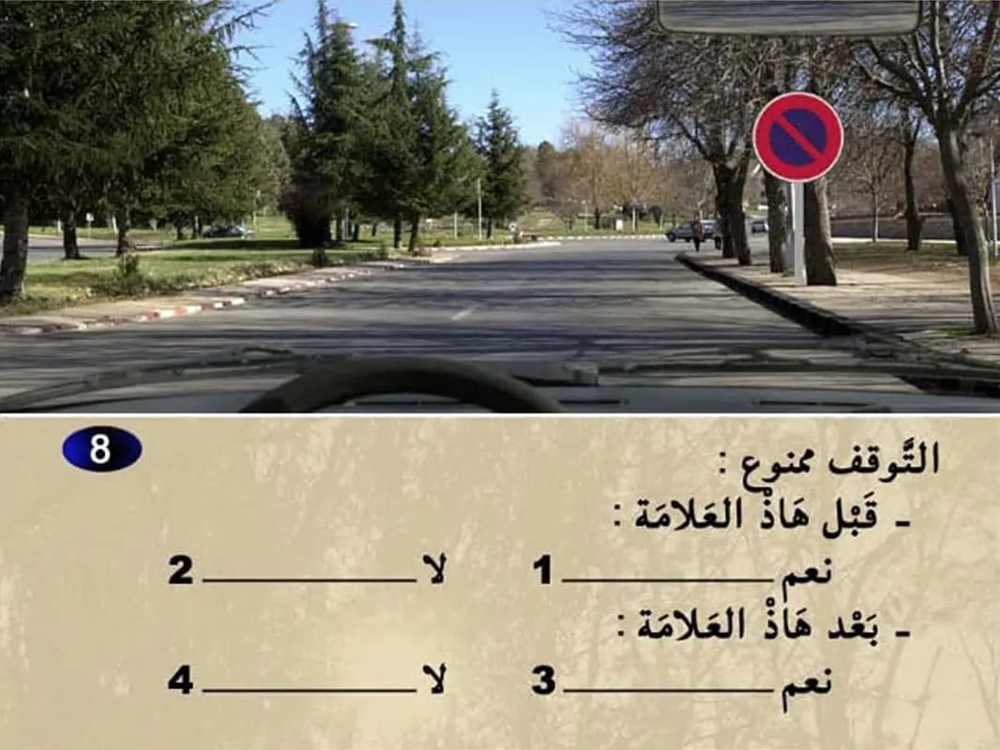
بيّن الجواب
الجواب الصحيح: 2 و 3
بالنسبة للعلامة الطرقية فهي تعني المنع، ولا يوجد سهم الذي يعني قبل العلامة، لذلك هنا في هذه الحالة فالمنع يطبّق من عند العلامة وبعدها.
السؤال 9
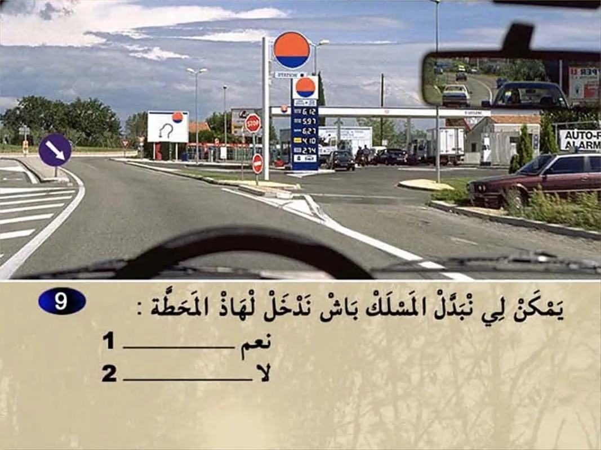
بيّن الجواب
الجواب الصحيح: 2
بالنسبة لتغيير المسلك ففي هذه الحالة فلا يمكن ذلك لأني وصلت إلى الخط المتصل الذي يمنعني من تغيير المسار.
السؤال 10
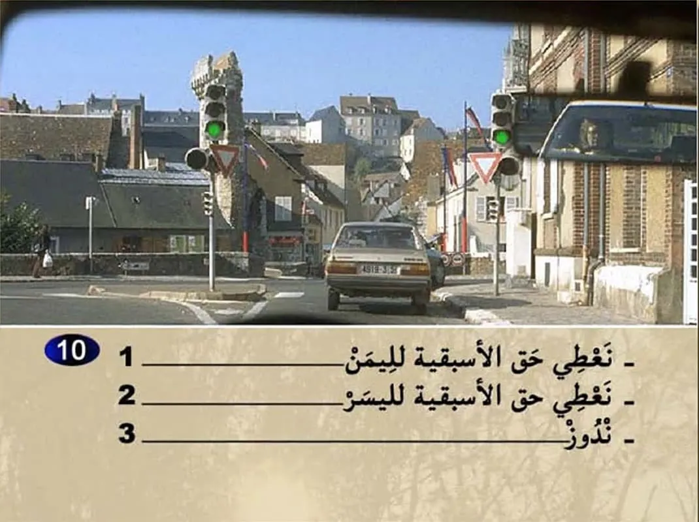
بيّن الجواب
الجواب الصحيح: 3
يوجد علامات طرقية تعني أنه ليس لدينا حق الأسبقية ولكن عند وجود الإشارات الضوئية فتلك العلامات تلغى، لذلك في هذه الحالة لدينا الضوء أخضر إذا علينا المرور.
السؤال 11
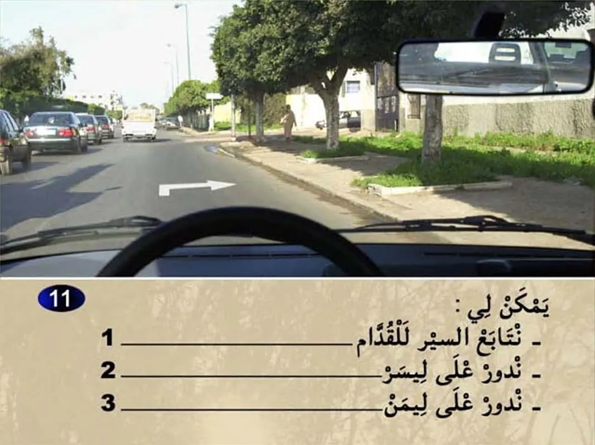
بيّن الجواب
الجواب الصحيح: 3
الإشارات الأفقية سهم في الطريق يعني الإجبار للإنعطاف إلى اليمين.
السؤال 12
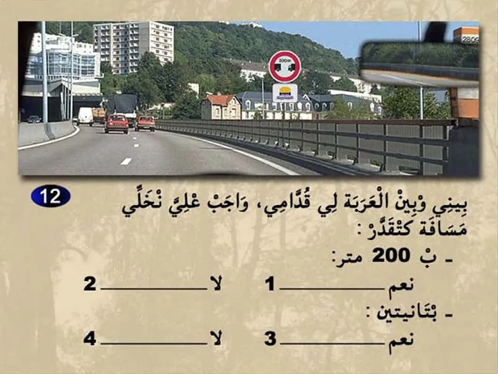
بيّن الجواب
الجواب الصحيح: 2 و 3
بالنسبة لعلامة المنع التي تعني أنه يجب ترك مسافة 200 متر بين العربتين فهي خاصة بالشاحنات وليس السيارات، بالنسبة لمسافة الأمان دائما تقدر تقريبا بثانيتين.
السؤال 13
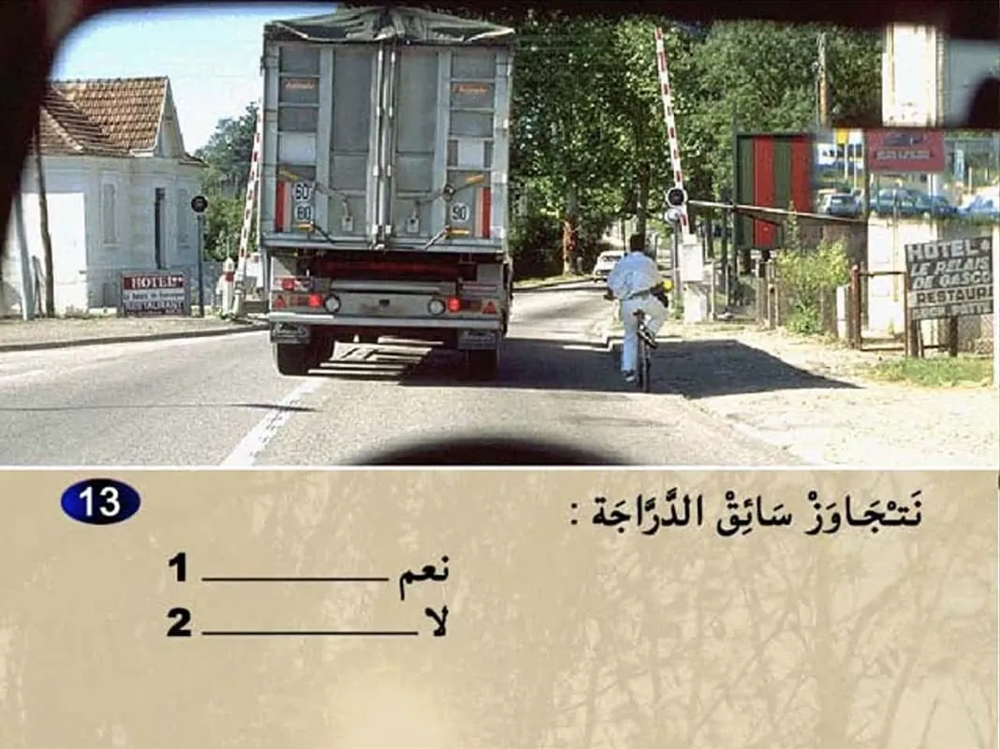
بيّن الجواب
الجواب الصحيح: 2
بالنسبة للشاحنة فقد إرتكب سائقها مخالفة ولا يجب التجاوز مثله لأن الخط متصل ولا يمكننا إتباعه لكي نتجاوز سائق الدرّاجة، لذلك لا يمكنني التجاوز الان.
السؤال 14
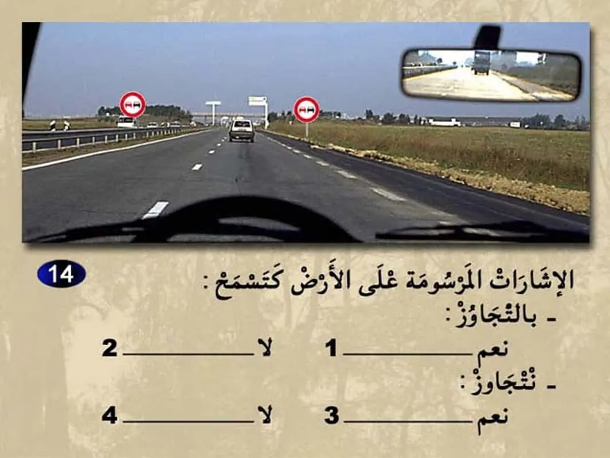
بيّن الجواب
الجواب الصحيح: 1 و 4
بالنسبة للإشارات المرسومة على الأرض فيقصدون بها الخط المتقطع، وفي بعض الحالات يقول السؤال التشوير الأفقي وهو يعني كذلك الإشارات المرسومة على الأرض، في هذه الحالة بالنسبة للإشارات المرسومة على الأرض الخط المتقطع فهي تسمح لنا بالنتجاوز ولكن لا يمكنني التجاوز الان لأنه يوجد علامات طرقية عمودية تمنعنا من التجاوز الان.
السؤال 15
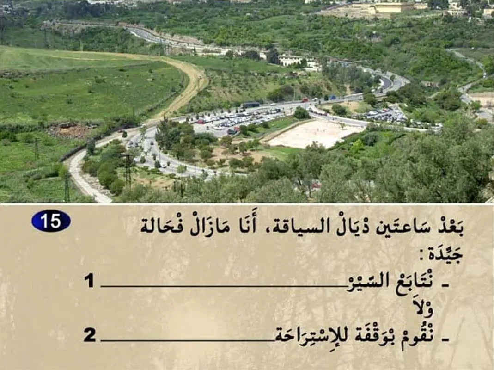
بيّن الجواب
الجواب الصحيح: 2
القانون يقول أنه بعد كل ساعتين من السياقة فالشخص يحتاج إلى 15 دقيقة من الإستراحة، لذلك في هذه الحالة يجب أن نقوم بوقفة إستراحة وبعد ذلك نقوم بإكمال السير.
السؤال 16
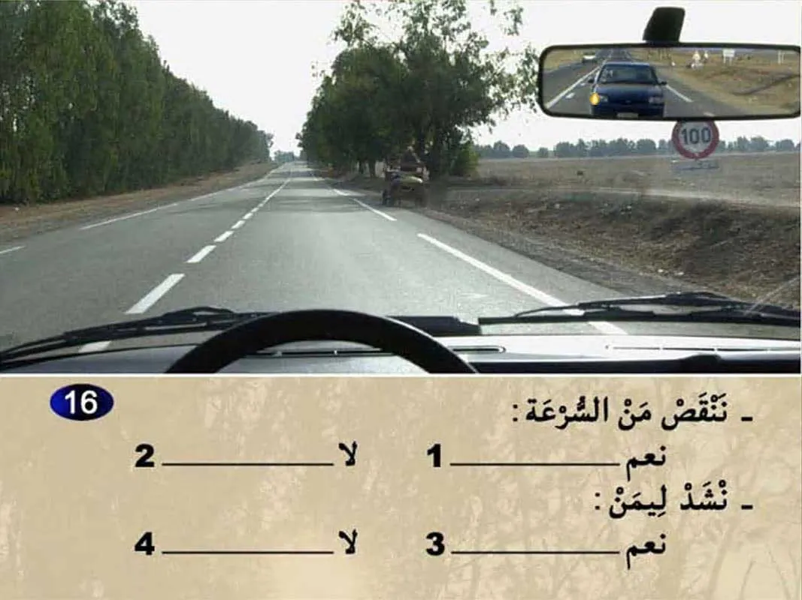
بيّن الجواب
الجواب الصحيح: 2 و 3
عندما تكون سيارة تستعد لتجاوزنا فلا نزيد من السرعة ولا ننقص منها يجب البقاء في نفس السرعة، وكذلك البقاء في مسلكنا الخاص بالسيّر العادي.
السؤال 17
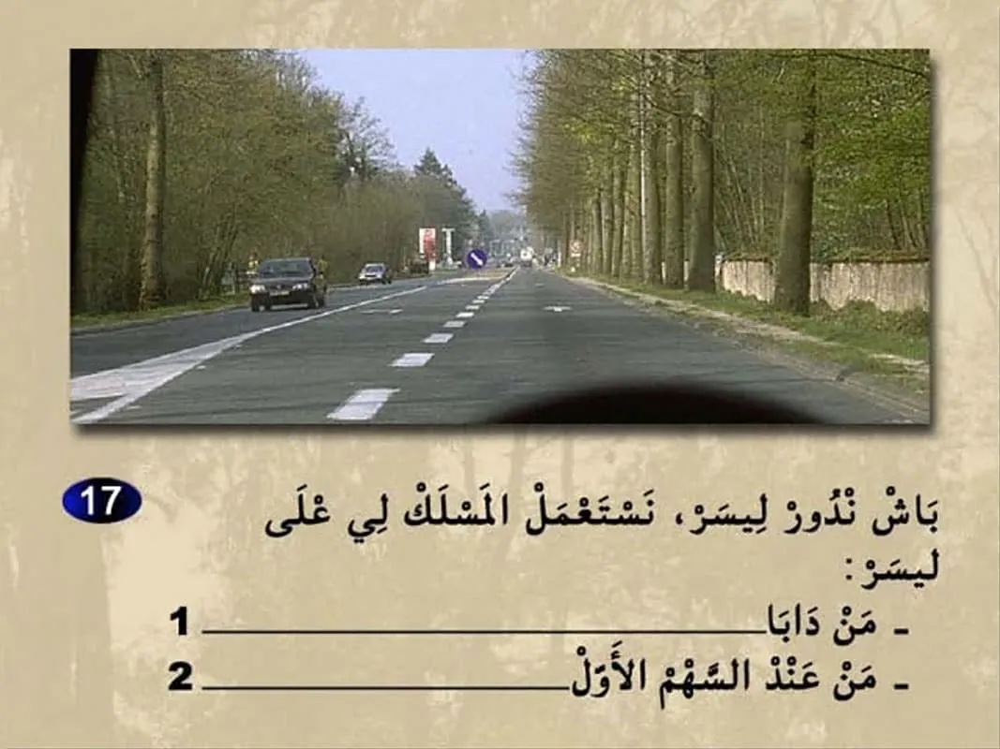
بيّن الجواب
الجواب الصحيح: 1
بما أنني أريد الإنعطاء إلى اليسار، يجب أن أنحاز الى المسلك الاخر من الان، لأن التشوير الأفقي أي السهم المرسوم على الأرض يجبرني للإنعطاف إلى اليسار، لذلك يجب عليّ من الان السير في المسلك الاخر للإنعطاف لليسار.
السؤال 18
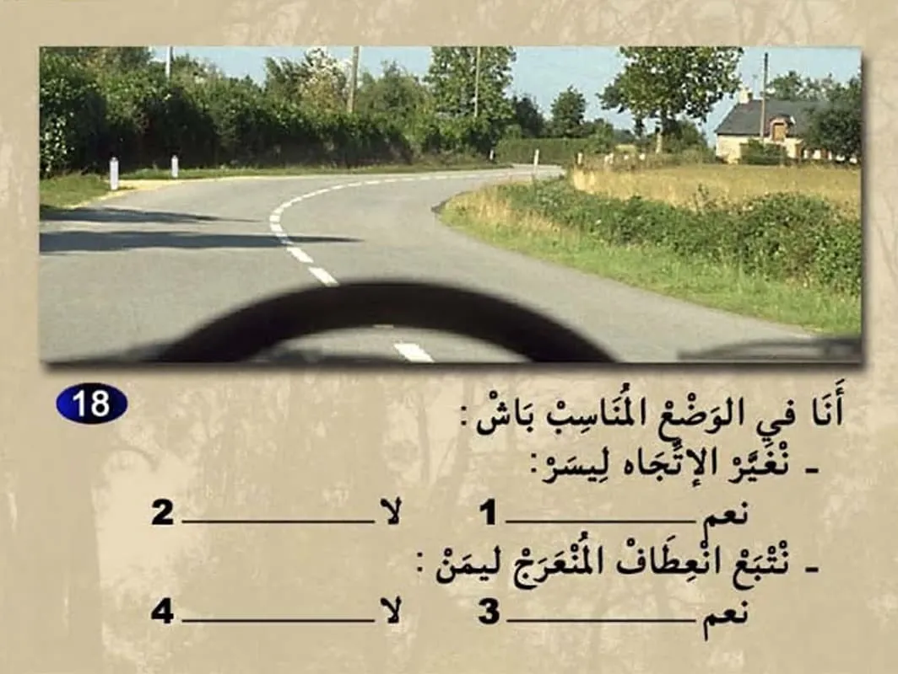
بيّن الجواب
الجواب الصحيح: 2 و 4
في كلتا الحالتين لست في مكان جيد للإنعطاف لليمين أو اليسار، دائما بالنسبة للإنعطاف لليمين أو اليسار يجب ان أتواجد في المسلك الموجود على اليمين أي المسلك العادي للسير.
السؤال 19
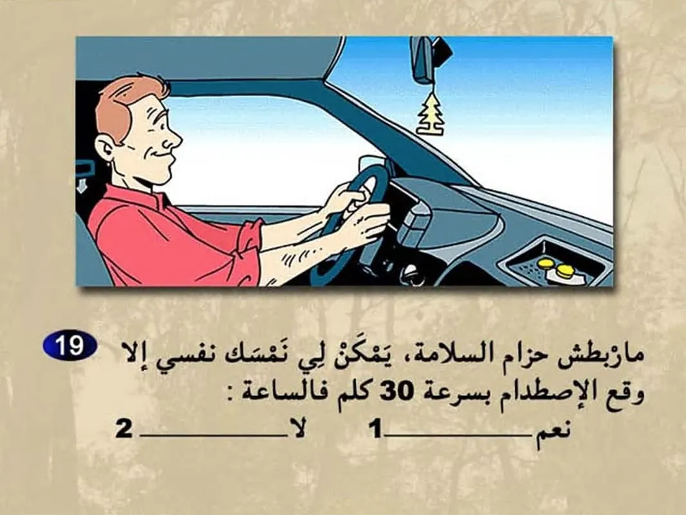
بيّن الجواب
الجواب الصحيح: 2
بالنسبة لحزام السلامة فهو ضروري في أي سرعة أسير بها، ومهما كانت السرعة التي أسير بها فلا يمكن لي أن أتحكم في نفسي عند الإصطدام.
السؤال 20
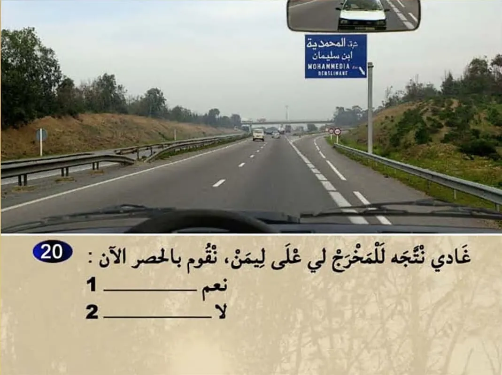
بيّن الجواب
الجواب الصحيح: 2
نحن في طريق سيّار ولم نصل بعد إلى مخرج اليمين لكي نقوم بعملية الحصر وننقص من السرعة، سوف نقوم بعملية الحصر عندما نقترب من المسلك الخاص بالإنعطاف لليمين وليس الان.
السؤال 21
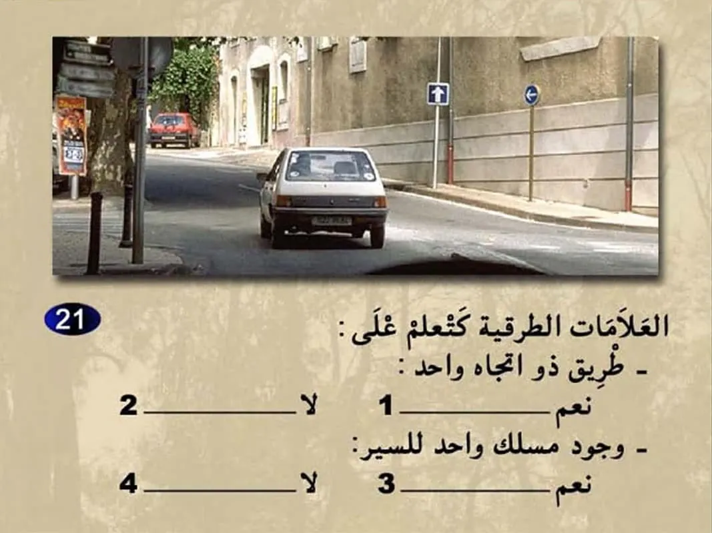
بيّن الجواب
الجواب الصحيح: 1 و 4
بالنسبة للعلامات الطرقية فهي تعني طريق ذات إتجاه واحد وليس طريق ذات مسلك واحد، كما توضح الصورة فالطريق تتوفّر على مسلكين وبالنسبة للعلامة الطرقية فهي تعني فقط أن الطريق ذات إتجاه واحد.
السؤال 22
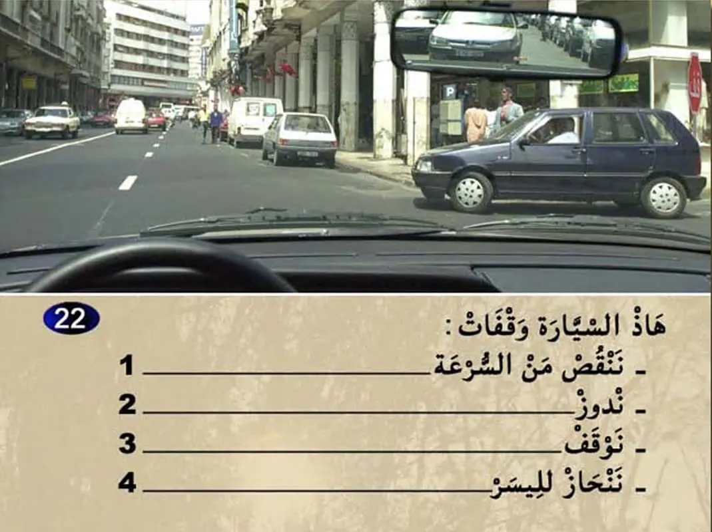
بيّن الجواب
الجواب الصحيح: 1 و 2
يجب الإنتباه دائما لهذا النوع من الأسئلة، في الصورة توجد علامة قف بالنسبة للسيارة السوداء ويجب عليها الوقوف، إذن يجب علي فقط ان أخفف من السرعة وأقوم بالمرور.
السؤال 23
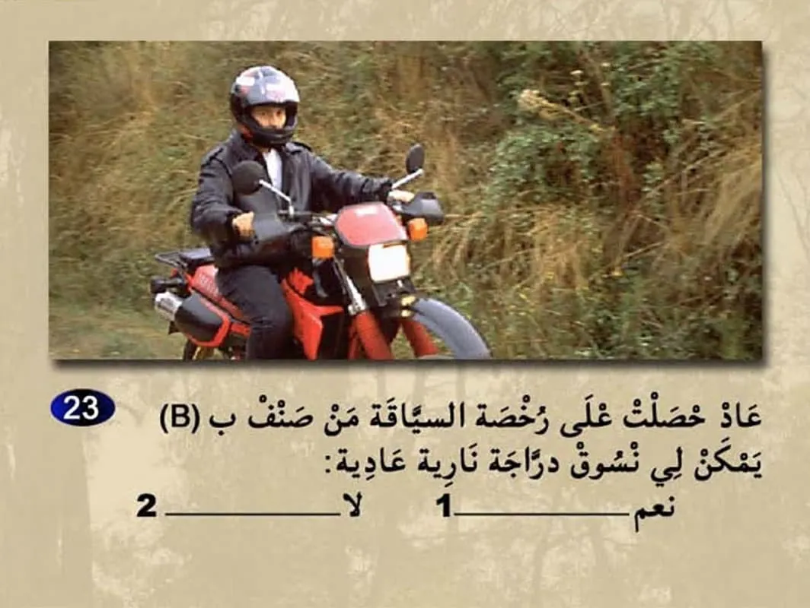
بيّن الجواب
الجواب الصحيح: 2
بالنسبة لرخصة السياقة من صنف (باء) (B) فهي خاصة فقط بسياقة السيارة ليس الدراجة النارية، بالنسبة للدراجة النارية فتحتاج إلى رخصة السياقة من نوع (ألف) (A).
السؤال 24
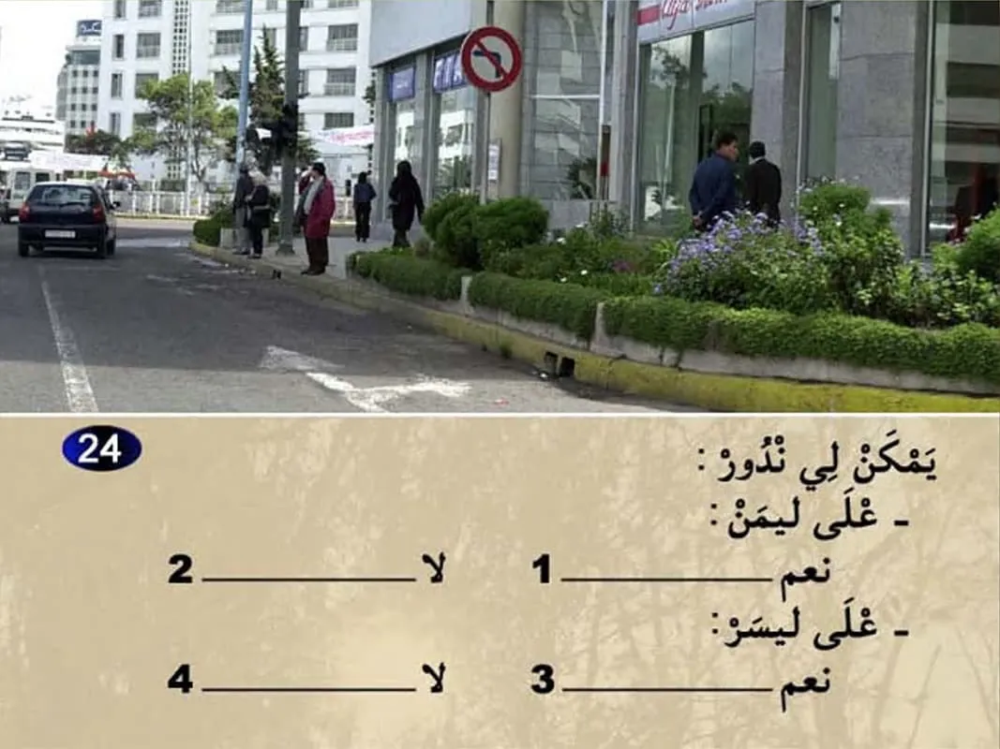
بيّن الجواب
الجواب الصحيح: 1 و 4
بالنسبة لهذه الحالة يمكنني الإنعطاف لليمين أو السير مباشرة لأنه يوجد تشوير أفقي السهم المرسوم على الأرض، ولا يمكنني الإنعطاف لليسار لأنه توجد علامة طرقية تمنعني من الإنعطاف لليسار.
السؤال 25
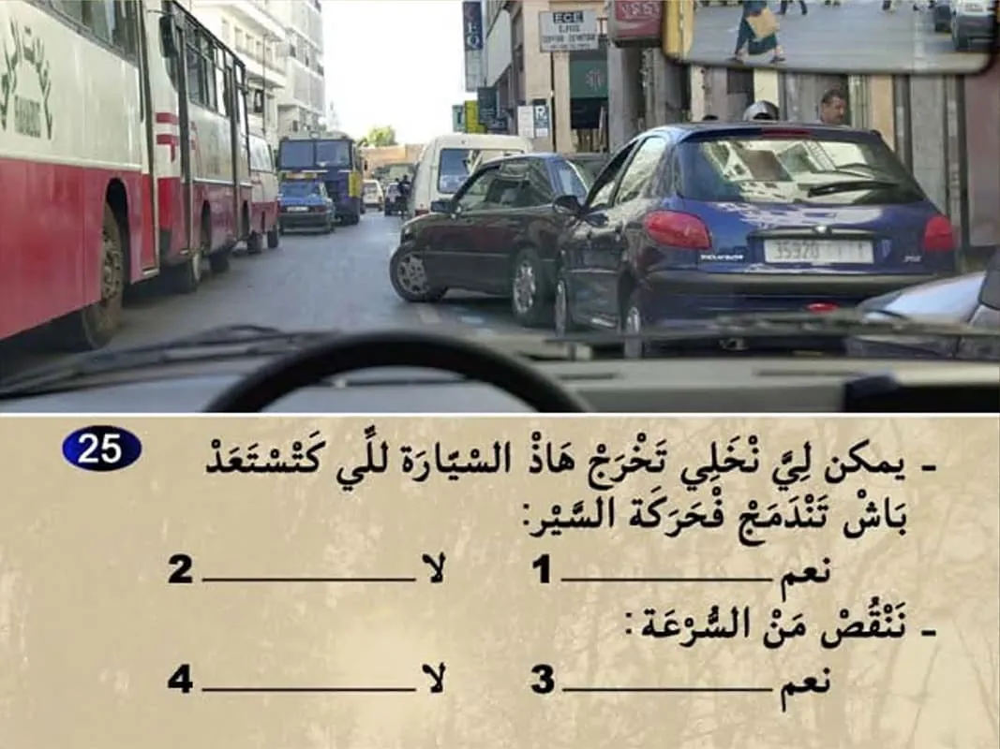
بيّن الجواب
الجواب الصحيح: 1 و 3
حركة السير متوقّفة ولا مشكلة في ترك السيارة تندمج في حركة السير، لذلك أيظا يجب علي أن أقلل من السرعة التي أسير بها لكي اترك السيارة تندمج في حركة السير.
السؤال 26
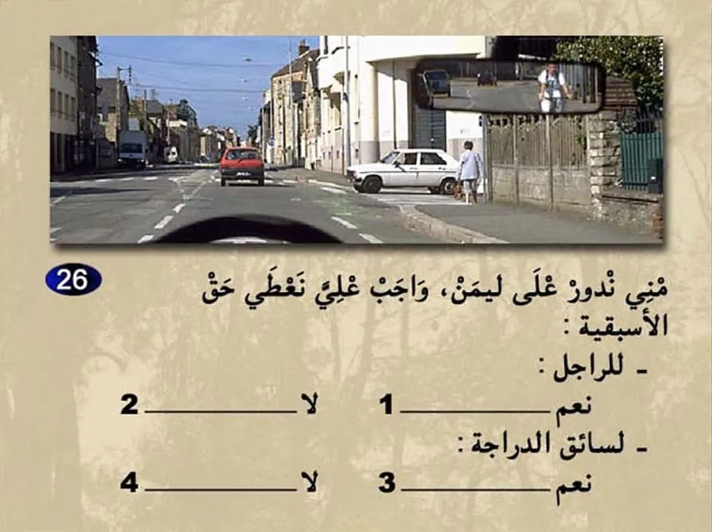
بيّن الجواب
الجواب الصحيح: 1 و 3
عند الإنعطاف لليمين فيوجد ممر الراجلين الذي يجبرني على أن أقوم بإعطاء حق الأسبقية للراجل، كذلك يوجد سائق دراجة من الخلف ويجب عليّ أن أعطيه حق الأسبقية للمرور أولا وأقوم بالمرور بعد ذلك.
السؤال 27
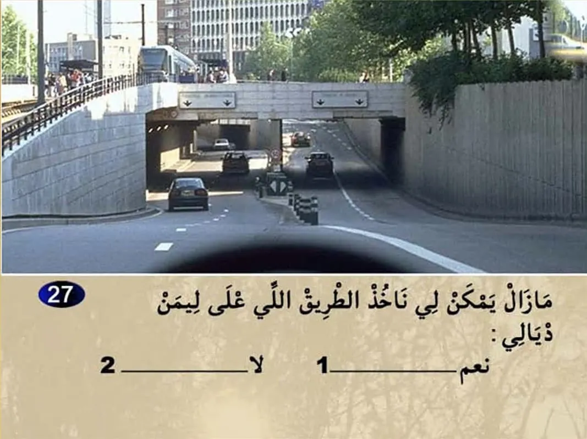
بيّن الجواب
الجواب الصحيح: 2
لا يمكنني الان أن أقوم بتغيير الإتجاه لليمين لتغيير المسلك لأنه الخط متّصل.
السؤال 28
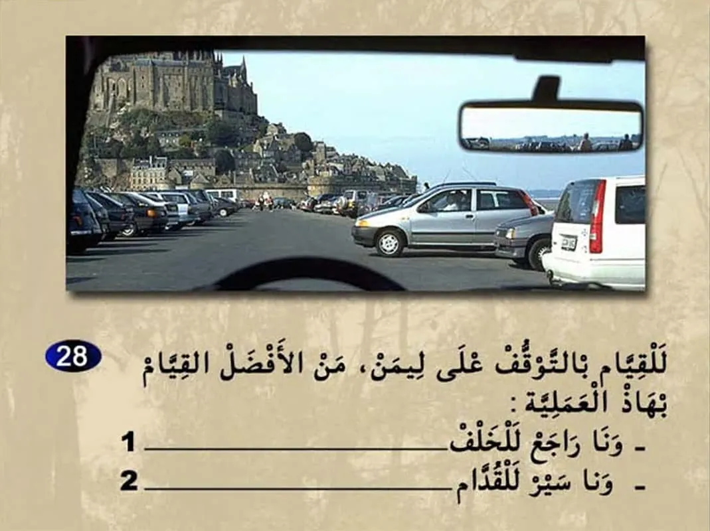
بيّن الجواب
الجواب الصحيح: 1
في الحالتين مسموح بهما أي التوقف على اليمين يمكنني القيام به وأنا أسير مباشرة وأيظا يمكنني القيام به وأنا راجع للخلف، لكن من الأفضل كما يقول السؤال في هذه الحالة أفضل طريقة للتوقف على اليمين هي الرجوع من الخلف، لانه عندما أريد الخروج بعد ذلك تكون العملية سهلة ولا يكون هنالك خطر كبير لانه سوف أخرج مباشرة من الموقف وتكون الرؤية واضحة أكثر.
السؤال 29
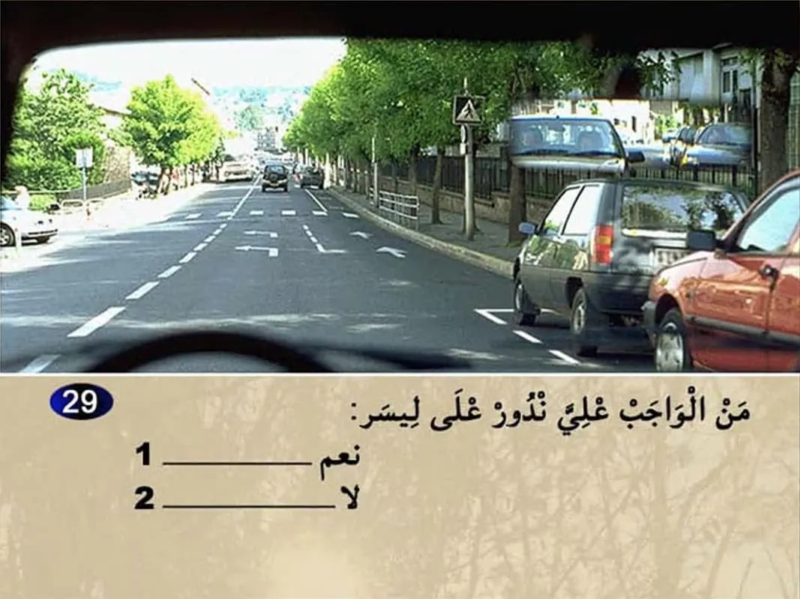
بيّن الجواب
الجواب الصحيح: 2
التشوير الأفقي السهم المرسوم على الأرض يجبرني للإنعطاف لليسار، لكن لم نصل إليه بعد يمكننا السير في المسلك الذي فيه سهم والذي يتيح السير مباشرة، لذلك في هذه الحالة لم أصل بعد إلى السهم ولذلك لست مجبر من الان ان أنعطف لليسار.
السؤال 30
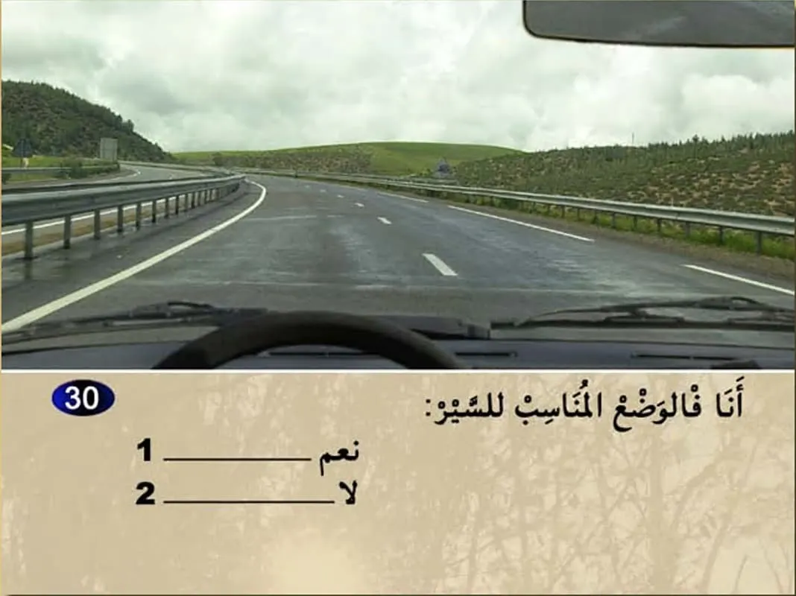
بيّن الجواب
الجواب الصحيح: 2
بالنسبة للمسلك الخاص بالسير العادي فهو المسلك الأول الموجود على اليمين، أنا الان أتواجد في المسلك الخاص بالتجاوز.
السؤال 31
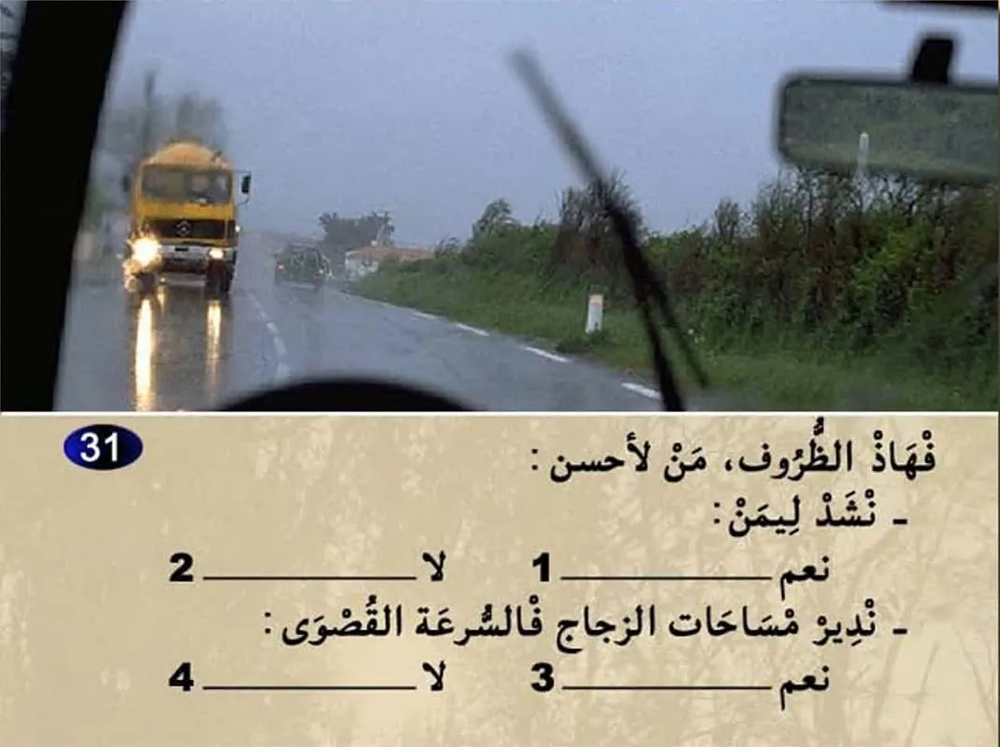
بيّن الجواب
الجواب الصحيح: 1 و 3
بالنسبة لهذه الظروف فيوجد مطر، بالنسبة للشاحنة فهي قادمة أمامي، يجب علي أن أسير في المسلك الخاص بي بشكل جيد، وبالنسبة لمسّاحات الزجاج في السرعة القصوى فمن الأفضل ذلك لكي أستطيع رؤية الطريق بشكل أفضل.
السؤال 32
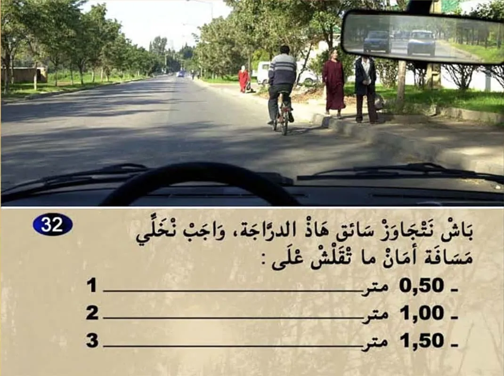
بيّن الجواب
الجواب الصحيح: 2
بالنسبة لتجاوز الدراجات داخل المدينة فيجب علي أن أترك مسافة أمان لا تقل عن متر واحد، وفي خارج المدينة نترك متر ونصف. في هذه الحالة نحن نتواجد داخل المدينة إذن يجب أن نترك مسافة لا تقّل عن متر.
السؤال 33
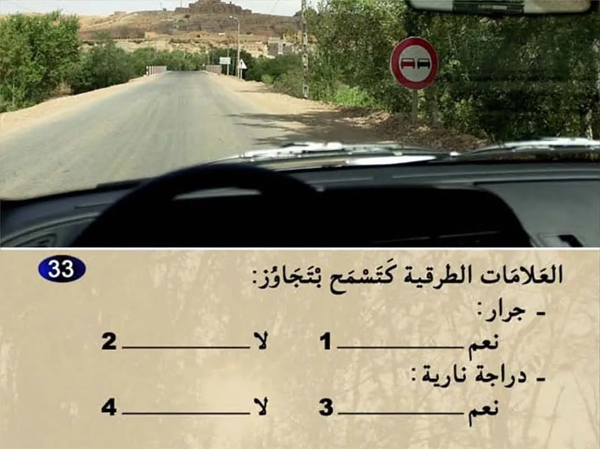
بيّن الجواب
الجواب الصحيح: 2 و 3
بالنسبة للعلامة الطرقية فهي تعني منع التجاوز لجميع العربات التي تتوفر على 4 عجلات، بالنسبة للجرار فيتوفر على 4 عجلات إذن لا يمكنني تجاوزه، بالنسبة للدراجة النارية فيمكننا تجاوزها لأنها تتوفر على عجلتين.
السؤال 34
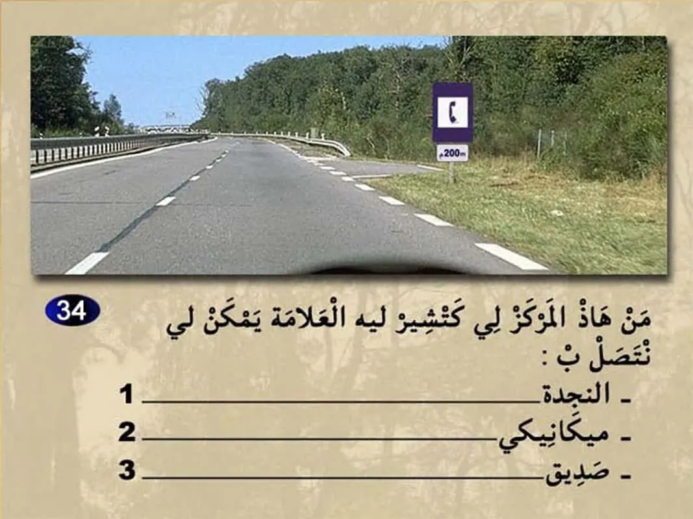
بيّن الجواب
الجواب الصحيح: 1
نحن نتواجد في طريق سيّار ويتوفّر على مركز النجدة، هذا المركز يتيح لنا فقط الإتصال بالنّجدة ولا شيئ اخر.
السؤال 35
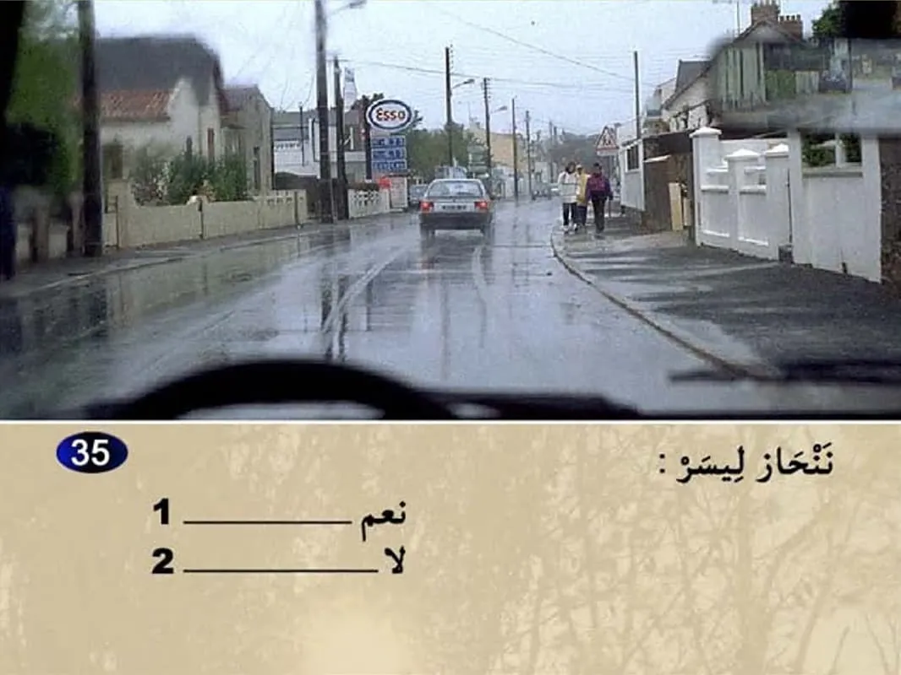
بيّن الجواب
الجواب الصحيح: 1
يوجد مطر، وفي القانون عندما نريد التقابل مع شخص فيجب ترك مسافة، لذلك في هذه الحالة يجب الإنحياز قليلا لليسار.
السؤال 36
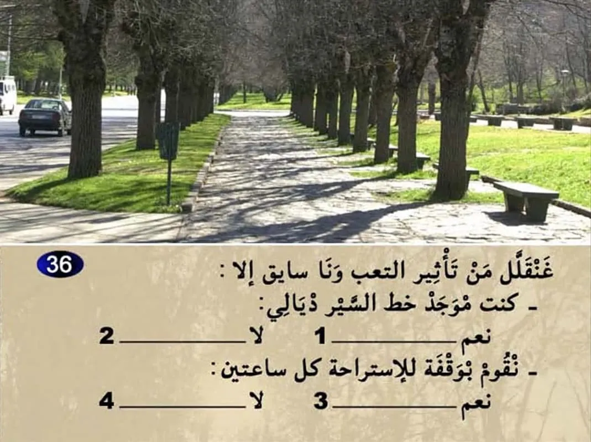
بيّن الجواب
الجواب الصحيح: 1 و 3
تقليل تأثير التعب له علاقة ببرنامج السير أو خط السير، فمثلا عند الذهاب إلى مدينة اخرى وكان برنامج السير واضح فسوف نقلل المسافة ونعرف أين يجب أن نذهب مباشرة وبذلك سوف نقلل من تأثير التعب، وبالنسبة لوقفة إستراحة كل ساعتين فهذا واجب وضروري لأن القانون يقول أنه بعد كل ساعتين من السير فيجب على السائق أخد قسط من الراحة يبلغ على الأقل 15 دقيقة.
السؤال 37
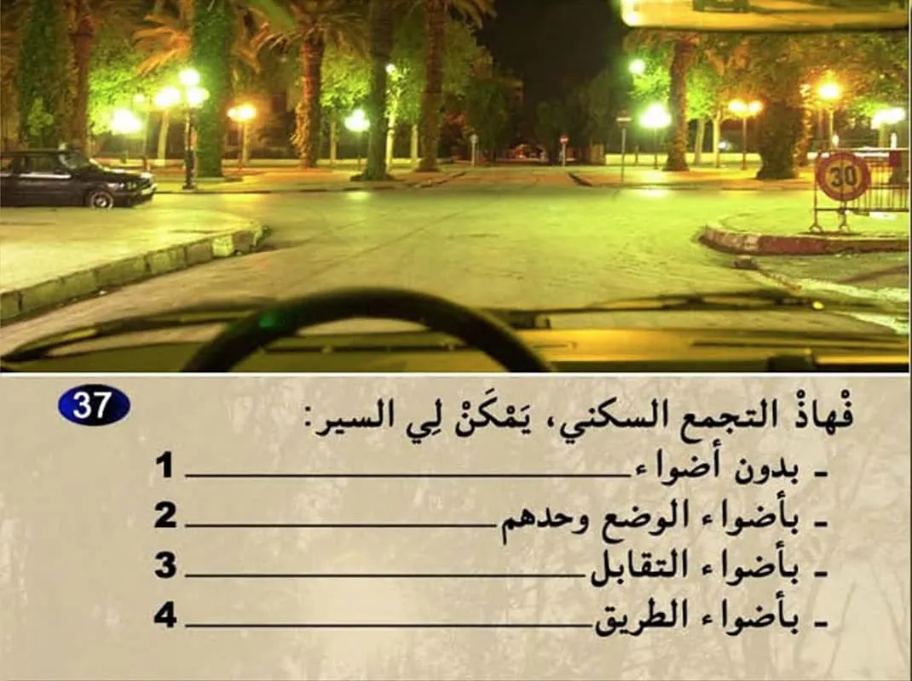
بيّن الجواب
الجواب الصحيح: 2 و 3
في الليل إستعمال اَواء العربة ضروري حتى مع وجود إنارة المدينة، إذن في الليل يمكنني السير بأضواء الوضع وحدهم بما أننا داخل التجمع السكاني ويوجد إنارة عمومية او يمكننا كذلك السير بأضواء التقابل، لا يمكن السير بدون اضواء في الفترة الليلية وايضا لا يمكن إستعمال أضواء الطّريق داخل التّجمعات السّكانية. إذا الإجابة الصحيحة هي رقم 2 و 3.
السؤال 38
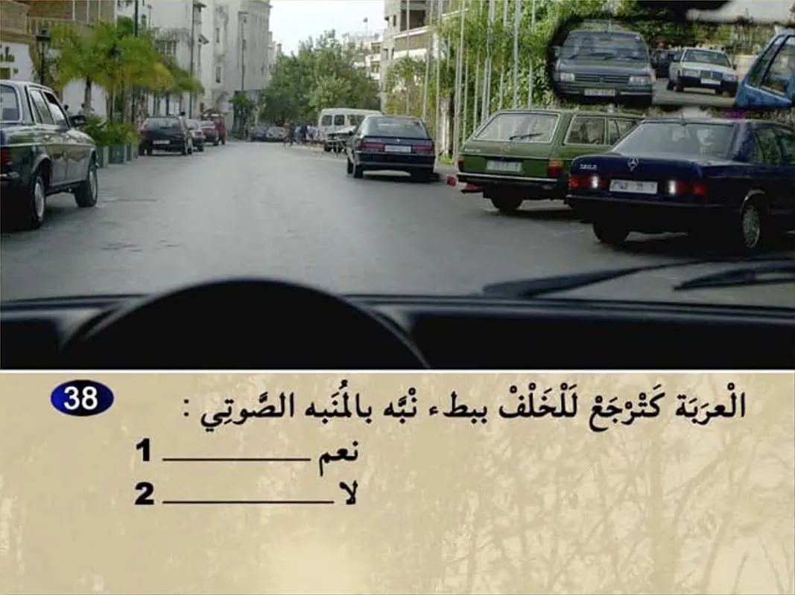
بيّن الجواب
الجواب الصحيح: 2
المنبّه الصوتي ممنوع في المدينة إلّا للضرورة القصوى، بالنسبة للسؤال بما أنه يقول أن العربة ترجع للخلف ببطئ فهنا لا نستعمل المنبه الصوتي. في بعض المرات السؤال يقول أن العربة ترجع للخلف (بدون ذكر كلمة ببطئ) في هذه الحالة نقوم بالتّنبيه بالمنبّه الصوتي.
السؤال 39
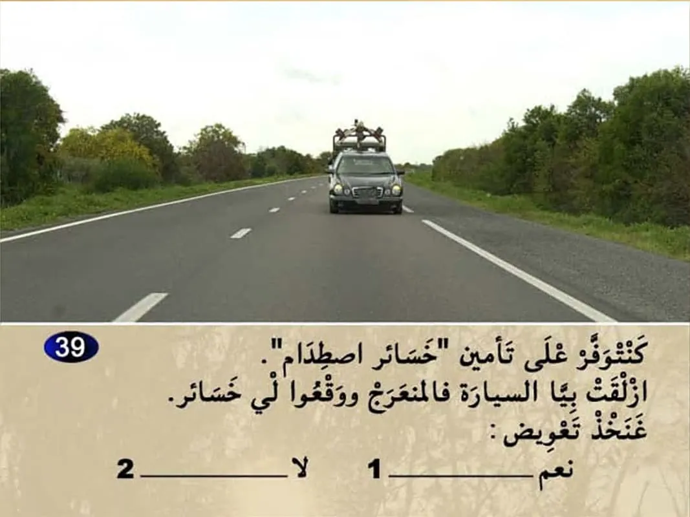
بيّن الجواب
الجواب الصحيح: 2
التأمين فيه العديد من الانواع، مثلا التأمين على السرقة، التأمين على الحريق، التأمين على الخسائر المادية، وما إلى غير ذلك من أنواع التأمين،، في هذه الحالة السؤال يقول على أننا نتوفر على تأمين خاص بخسائر بالإصطدام، لذلك شركة التأمين لن تقوم بتعويضي لانه لديّ فقط تامين الإصطدام وليس تأمين للخسائر.
السؤال 40
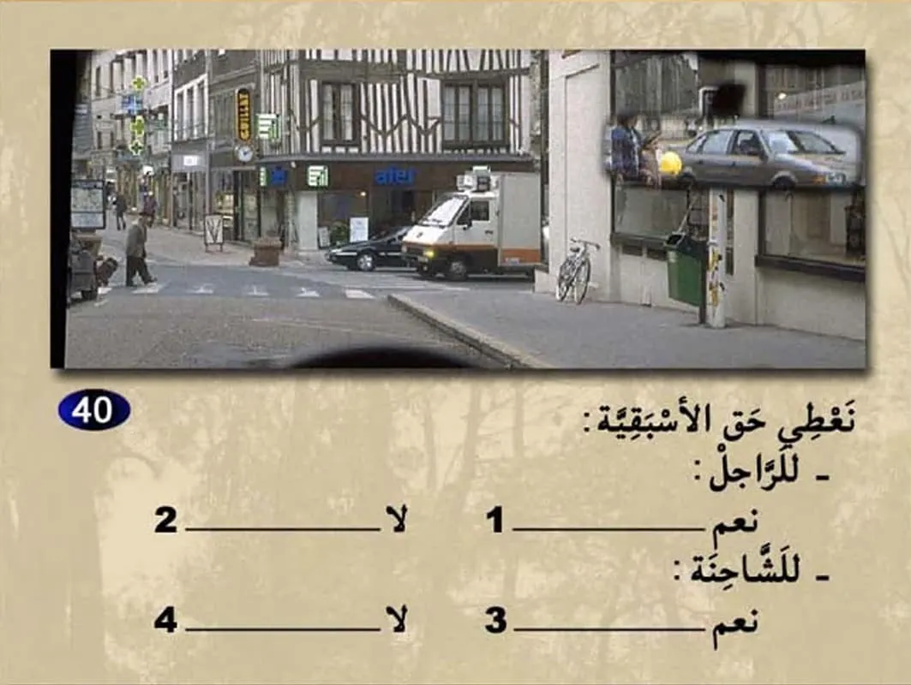
بيّن الجواب
الجواب الصحيح: 1 و 3
أعطي حق الأسبقية بالنسبة للراجل لأنه يتواجد في ممر الراجلين، وأيظا أعطي حق الأسبقية للشاحنة لأن في ملتقيات الطرق الأسبقية للعربات القادمة من الجهة اليمنى.